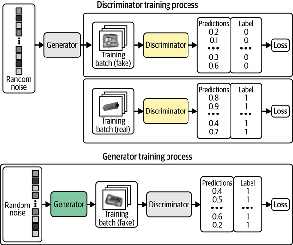
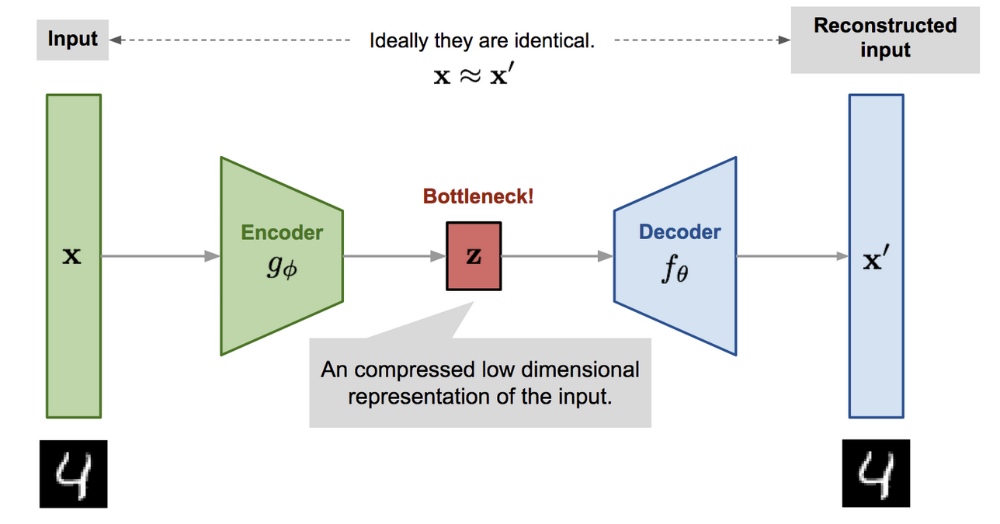
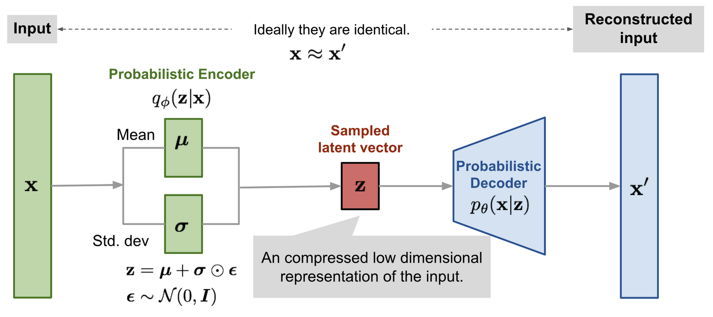
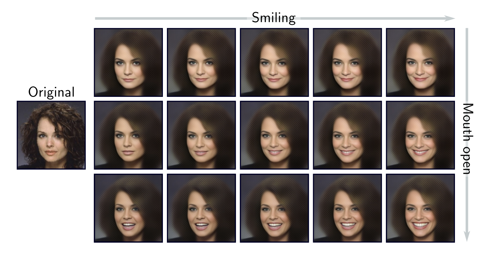
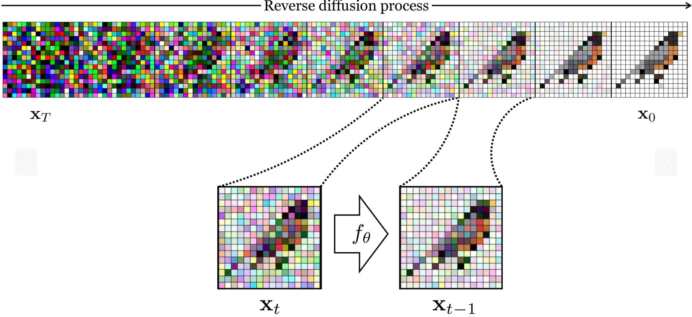
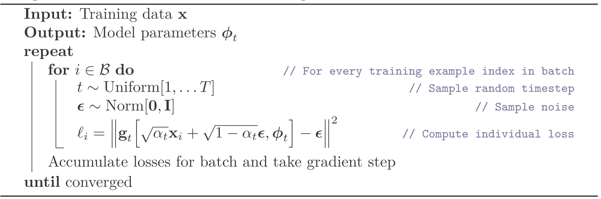
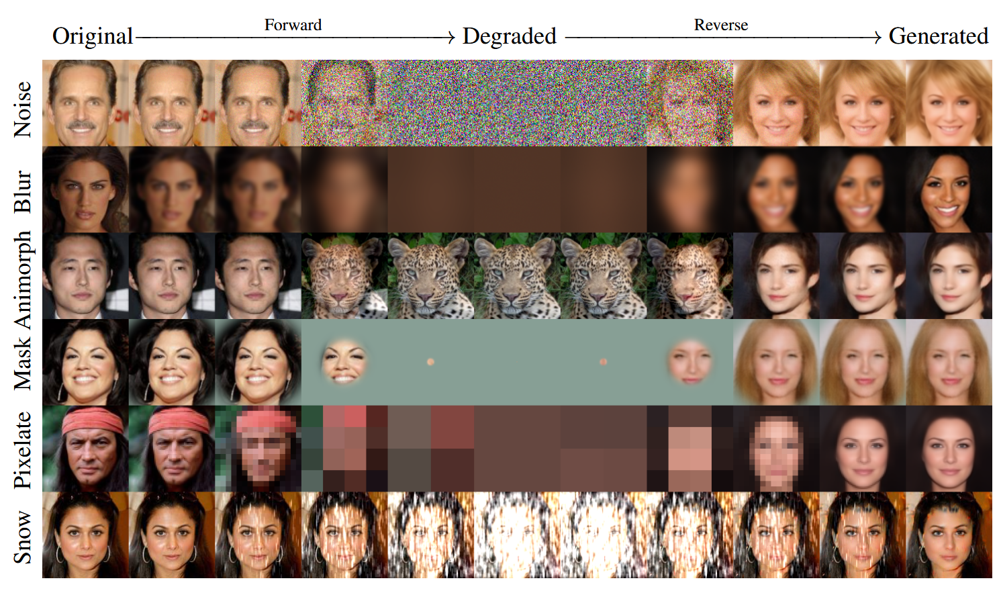

9 - GenAI Model Families
CAS Deep Learning - Computer Vision (Part1)
Institute for Data Science I4DS, FHNW
Autoregressive Models
Sequential Generation

Predict one element at a time, conditioned on all previous elements (Torralba et al. (2024)).
Factorization
\[p(x_1, \ldots, x_n) = p(x_1)\, p(x_2|x_1)\, p(x_3|x_1, x_2) \cdots p(x_n|x_1, \ldots, x_{n-1})\]
Each conditional \(p(x_i \mid x_1, \ldots, x_{i-1})\) is modeled by a neural network (masked CNN or Transformer).
Image generation becomes a sequence prediction problem.
Sampling Step by Step
- Sample \(x_1 \sim p(x_1)\)
- Sample \(x_2 \sim p(x_2 \mid x_1)\)
- Sample \(x_3 \sim p(x_3 \mid x_1, x_2)\)
- … continue until all pixels are generated
Pros & Cons
Pros
- Exact likelihood computation
- Natural fit for language / discrete tokens
Cons
- Sequential generation is slow
- Pixel-level image generation is expensive
- Errors can accumulate during sampling
Generative Adversarial Networks
The Adversarial Game

Generator \(g(\mathbf{z})\) fakes — Discriminator \(d(\mathbf{x})\) judges (Goodfellow et al. (2014)).
Minimax Objective
\[\min_{g} \max_{d} \mathbb{E}_{\mathbf{x} \sim p_{\text{data}}}[\log d(\mathbf{x})] + \mathbb{E}_{\mathbf{z} \sim p_z}[\log(1 - d(g(\mathbf{z})))]\]
- \(d\): maximize correct real/fake classification
- \(g\): minimize \(d\)’s success — fool the discriminator
- Training alternates between the two
GAN Learning Process

Generator distribution (green) moves toward real data (black dots), discriminator boundary (blue) adapts (Foster (2023)).
Pros & Cons
Pros
- Fast sampling — one forward pass
- Can produce sharp images
- Historically pivotal for image generation
Cons
- Training can be unstable
- Mode collapse — limited variety
- No direct likelihood
- Modern text-to-image systems are rarely pure GANs
Variational Autoencoders
VAE Architecture

Encoder \(q_{\psi}(\mathbf{z} \mid \mathbf{x})\) — Decoder \(p_{\theta}(\mathbf{x} \mid \mathbf{z})\)
Probabilistic Twist
Unlike standard autoencoders, the latent space is structured probabilistically, so random samples decode to meaningful outputs.
Reparameterization Trick

\[\mathbf{z} = \mathbf{\mu} + \mathbf{\epsilon} \cdot \mathbf{\sigma}, \qquad \mathbf{\epsilon} \sim \mathcal{N}(\mathbf{0}, \mathbf{I})\]
Lets gradients flow through stochastic sampling.
ELBO Objective
\[\text{ELBO} = \underbrace{\mathbb{E}_{\mathbf{z} \sim q_{\psi}(\mathbf{z}|\mathbf{x})}[\log p_{\theta}(\mathbf{x}|\mathbf{z})]}_{\text{Reconstruction}} - \underbrace{\text{KL}(q_{\psi}(\mathbf{z}|\mathbf{x}) \,\|\, p(\mathbf{z}))}_{\text{Regularization}}\]
- Reconstruction — decoder must recover the input
- KL regularization — pull posterior toward prior \(p(\mathbf{z}) = \mathcal{N}(\mathbf{0}, \mathbf{I})\)
- Result: a smooth, continuous latent space
VAE Latent Space

Traversing the latent space → smooth interpolation between faces (Prince (2023)).
Pros & Cons
Pros
- Principled probabilistic foundation
- Structured, interpretable latent space (interpolation, factor analysis)
- Stable training
- Useful for representation learning
Cons
- Tend to produce blurry outputs (improvable with more complex variants)
Diffusion Models
Core Idea
Learn to reverse a gradual noising process.
Forward Diffusion

Gradually add Gaussian noise over \(T\) steps (Torralba et al. (2024)). Fixed, no neural network.
Forward Process
\[\mathbf{x}_t = \sqrt{1 - \beta_t}\, \mathbf{x}_{t-1} + \sqrt{\beta_t}\, \mathbf{\epsilon}_t, \qquad \mathbf{\epsilon}_t \sim \mathcal{N}(\mathbf{0}, \mathbf{I})\]
- \(\beta_t\) — noise schedule (linear, cosine, …)
- \(\mathbf{x}_0\) (clean) → \(\mathbf{x}_T \approx \mathcal{N}(\mathbf{0}, \mathbf{I})\)
- Can sample \(\mathbf{x}_t\) directly from \(\mathbf{x}_0\) → efficient training over many noise levels
Reverse Diffusion

A neural network learns to gradually remove noise, step by step (Torralba et al. (2024)).
Reverse Process
Start from pure noise: \[\mathbf{x}_T \sim \mathcal{N}(\mathbf{0}, \mathbf{I})\]
Iteratively denoise to a realistic sample \(\mathbf{x}_0\).
The network is conditioned on the timestep \(t\) — noise level varies dramatically across steps.
Training Objective
\[\mathcal{L} = \mathbb{E}_{t, \mathbf{x}_0, \mathbf{\epsilon}}\left[\,\|\, \mathbf{\epsilon} - f_\theta(\mathbf{x}_t, t)\,\|^2\,\right]\]
The model predicts the noise \(\mathbf{\epsilon}\) that was added to \(\mathbf{x}_0\) to produce \(\mathbf{x}_t\).
Training & Sampling

Training: random \(t\), random \(\mathbf{\epsilon}\). Sampling: iterate from \(T\) down to \(0\).
U-Net Denoiser

Encoder–decoder with skip connections; timestep \(t\) embedded throughout (Prince (2023)).
Pros & Cons
Pros
- High-quality, diverse outputs (currently SOTA)
- Stable, reliable training
Cons
- Slow inference — iterative sampling
- High compute cost (training and inference)
Aside: Cold Diffusion

Gaussian noise isn’t fundamental — any invertible degradation works (blur, masking, pixelation) (Bansal et al. (2022)).
Success comes from the gradual, multi-step inversion, not the noise itself.
Conditioning Across Families
From \(p(\mathbf{x})\) to \(p(\mathbf{x} \mid \mathbf{c})\)
So far: model \(p(\mathbf{x})\) unconditionally.
In practice: model \[p_\theta(\mathbf{x} \mid \mathbf{c})\]
\(\mathbf{c}\) — class label, text prompt, source image, mask, layout, depth, reference…
Conditioning Is Not a Separate Family
| Family | How conditioning enters |
|---|---|
| Autoregressive | condition each prediction step on \(\mathbf{c}\) |
| VAEs | condition encoder and/or decoder on \(\mathbf{c}\) |
| GANs | condition generator (and often discriminator) on \(\mathbf{c}\) |
| Diffusion | condition the denoising network on \(\mathbf{c}\) |
Modern text-to-image and image-editing systems use these mechanisms extensively.
Recap
- Autoregressive — exact likelihood, slow sequential sampling
- GAN — fast & sharp, unstable, mode collapse risk
- VAE — structured latent, stable, blurrier
- Diffusion — SOTA quality, iterative & costly
- Conditioning — applies to all of them